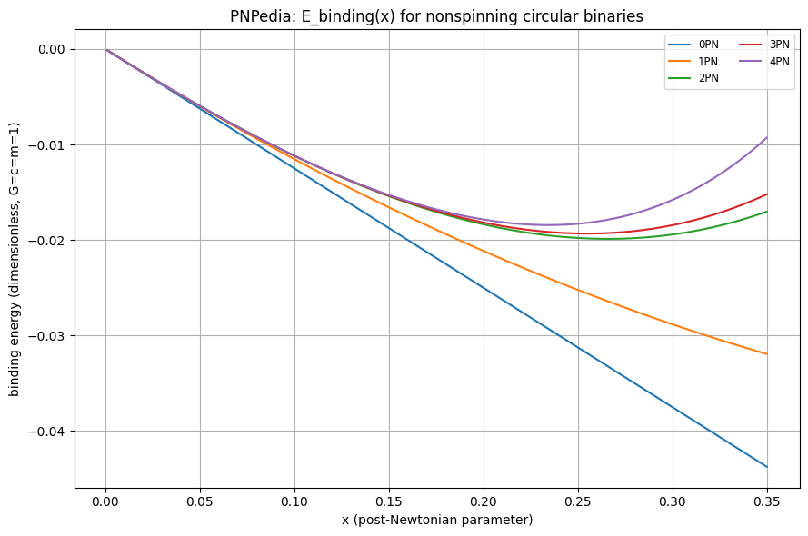
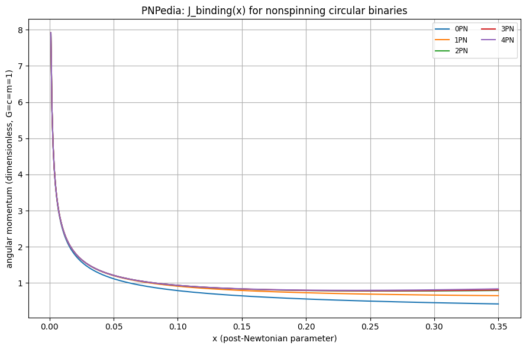
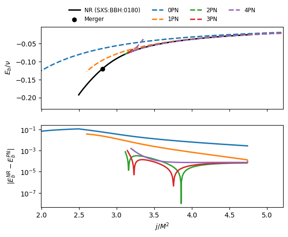
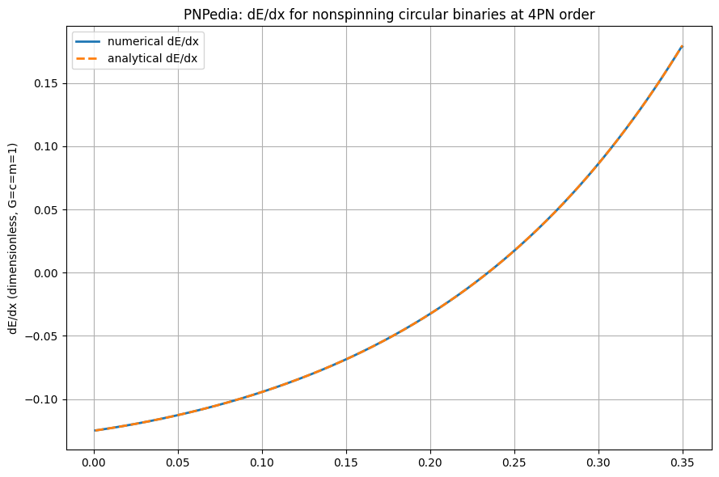

PNPedia interface¶
This notebook demonstrates how to use PyART.analytic.pnpedia.PNPedia to load and manipulate PN quantities.
Loading and plotting a PN quantity¶
We begin by importing the necessary modules and creating an instance of PNPedia. We then load the energy of a non-spinning binary system on circular orbits, and plot it as a function of the PN parameter x.
We will use theget_pn_quantity() method. Calling .to_function() on that object then returns a callable together with the symbolic argument order it expects.
import sys
from pathlib import Path
import matplotlib.pyplot as plt
import numpy as np
def find_repo_root(start: Path) -> Path:
for candidate in (start, *start.parents):
if (candidate / "pyproject.toml").exists() and (candidate / "PyART").exists():
return candidate
raise FileNotFoundError(
"Could not locate the PyART repository root from the notebook working directory."
)
repo_root = find_repo_root(Path.cwd().resolve())
if str(repo_root) not in sys.path:
sys.path.insert(0, str(repo_root))
from PyART.analytic.pnpedia import PNPedia
# Clone or reuse a local PNPedia checkout under the repository root.
pnpedia_path = repo_root / "PNPedia"
npd = PNPedia(path=str(pnpedia_path), download=not pnpedia_path.exists())
# PN variable x range for circular inspiral (small x region)
x = np.linspace(0.001, 0.35, 400)
# Evaluate with geometric-like normalized constants and symmetric mass ratio nu=0.25.
# Set G=c=m=b0=1 for demonstration, then tune as required for a specific use case.
value_map = {"G": 1.0, "b0": 1.0, "c": 1.0, "m": 1.0, "nu": 0.25, "x": x}
energy_orders = [0, 1, 2, 3, 4]
angular_momentum_orders = [0, 1, 2, 3, 4]
def evaluate_expression(expression):
analytic_func, variables = expression.to_function()
args = [value_map[str(symbol)] for symbol in variables]
return analytic_func(*args), variables
# 1) Plot E(x) for multiple PN truncations
plt.figure(figsize=(9, 6))
for order in energy_orders:
energy_expr = npd.get_pn_quantity(
"energy_circular_nonspinning_binding", order=order
)
energy, _ = evaluate_expression(energy_expr)
plt.plot(x, energy, lw=1.5, label=f"{order}PN")
plt.xlabel("x (post-Newtonian parameter)")
plt.ylabel("binding energy (dimensionless, G=c=m=1)")
plt.title("PNPedia: E_binding(x) for nonspinning circular binaries")
plt.grid(True)
plt.legend(ncol=2, fontsize="small")
plt.tight_layout()
plt.show()
# 2) Plot J(x) for multiple PN truncations
plt.figure(figsize=(9, 6))
for order in angular_momentum_orders:
angular_momentum_expr = npd.get_pn_quantity(
"angular_momentum_circular_nonspinning_conservative", order=order
)
angmom, _ = evaluate_expression(angular_momentum_expr)
plt.plot(x, angmom, lw=1.5, label=f"{order}PN")
plt.xlabel("x (post-Newtonian parameter)")
plt.ylabel("angular momentum (dimensionless, G=c=m=1)")
plt.title("PNPedia: J_binding(x) for nonspinning circular binaries")
plt.grid(True)
plt.legend(ncol=2, fontsize="small")
plt.tight_layout()
plt.show()
Cloning into '/home/runner/work/PyART/PyART/PNPedia'...


The PNPedia entries contain also metadata with pointers to documentaton, notation and endorsers of the expressions themselves
energy_entry = npd.get_entry("energy_circular_nonspinning_binding")
metadata = energy_entry.metadata
for key, value in metadata.items():
if key == 'notation':
print(f"{key}:")
for key2, value2 in value.items():
print(f" {key2}: {value2}")
else:
print(f"{key}: {value}")
arxiv_references: ['arXiv:2504.13245v1', 'arXiv:1401.4548v2', 'arXiv:1711.00283v2']
notation:
Pi: $\pi \approx 3.14$
EulerGamma: the Euler's constant $\gamma_\text{E} \approx 0.58$
G: Newton's constant of gravitation
c: the speed of light
x: the dimensionless orbital frequency $x = G m \omega /c^3$, where $\omega$ is the dimensionful orbital frequency
\[Nu]: the symmetric mass ratio, $\nu = \frac{m_1 m_2}{(m_1 + m_2)^2}$
b_0: an arbitary constant linked to the choice of spactime foliation
endorsers: ['David Trestini', 'Loïc Honet']
Compare the analytical PN binding energy to a NR curve¶
The binding energy vs angular momentum plot is a standard check for the consistency of PN results with NR simulations, as for quasi-circular orbits the full dynamics can be represented by these two gauge-invariant quantities.
Note: the NR comparison we perform is rather “naive”. One should in principle shift the NR curve such that the final state (remnant) coincides with the last point of the NR curve, see the appendix of https://arxiv.org/pdf/1506.08457
from PyART.catalogs import sxs
# NR curve from the SXS catalog
sxs_waveform = sxs.Waveform_SXS(
ID="0180",
download=True,
ignore_deprecation=True,
downloads=["hlm", "metadata", "horizons"],
load=["hlm", "metadata", "horizons"],
)
t_max, _, _, _, mrg_idx = sxs_waveform.find_max(return_idx=True, mode=(2, 2))
M_adm_0 = sxs_waveform.metadata["E0byM"]
J_adm_0 = sxs_waveform.metadata["Jz0"]
m1 = sxs_waveform.metadata["m1"]
m2 = sxs_waveform.metadata["m2"]
modes = [(2, 2), (2, 1), (3, 3), (4, 4), (2, -2), (2, -1), (3, -3), (4, -4)]
eb, e, jorb = sxs_waveform.ej_from_hlm(M_adm_0, J_adm_0, m1, m2, modes=modes)
# identify NR merger
e_mrg = eb[mrg_idx]
j_mrg = jorb[mrg_idx]
fig, ax = plt.subplots(2, 1, sharex=True)
ax0, ax1 = ax
ax0.plot(jorb, eb, "k-", lw=2, label="NR (SXS:BBH:0180)")
ax0.scatter(j_mrg, e_mrg, color="k", label="Merger")
# Flip arrays to have increasing J/nu for interpolation.
jorb = jorb[::-1]
eb = eb[::-1]
# PN curve (NPN order)
for order, color in zip(energy_orders, ["C0", "C1", "C2", "C3", "C4"]):
energy_expr = npd.get_pn_quantity(
"energy_circular_nonspinning_binding", order=order
)
angular_momentum_expr = npd.get_pn_quantity(
"angular_momentum_circular_nonspinning_conservative", order=order
)
E, _ = evaluate_expression(energy_expr)
J, _ = evaluate_expression(angular_momentum_expr)
ax0.plot(
J / value_map["nu"],
E / value_map["nu"],
"--",
color=color,
lw=2,
label=f"{order}PN",
)
# Plot residuals after interpolating both curves on a shared J grid.
jmin, jmax = np.min(J / value_map["nu"]), np.max(jorb)
jint = np.linspace(jmin, jmax, 500)
idx_min = np.argmin(np.abs(J / value_map["nu"] - jmin))
J_plot = J[: idx_min - 1][::-1]
E_plot = E[: idx_min - 1][::-1]
eb_nr_int = np.interp(jint, jorb, eb)
eb_pn_int = np.interp(jint, J_plot / value_map["nu"], E_plot / value_map["nu"])
deltaE = np.abs(eb_nr_int - eb_pn_int)
ax1.semilogy(jint, deltaE, "-", lw=2, color=color, label=f"{order}PN")
ax0.set_xlim(np.min(jorb) * 0.8, np.max(jorb) * 1.1)
ax0.set_ylim(np.min(eb) * 1.2, np.max(eb) * 0.1)
ax0.set_ylabel(r"$E_b/\nu$")
# legend out of plot, on top and horizontal
ax0.legend(loc="upper center",
bbox_to_anchor=(0.5, 1.3),
ncol=4, fontsize="small",
fancybox=False,
edgecolor='none'
)
ax1.set_xlabel(r"$j/M^2$")
ax1.set_ylabel(r"$|E_b^{NR} - E_b^{PN}|$")
plt.show()

Inspect AnalyticalExpressions, manipulate and evaluate them¶
The AnalyticExpression class wraps SymPy expressions and provides a small interface for differentiation, PN truncation, and numerical evaluation.
analytic_E = npd.get_pn_quantity("energy_circular_nonspinning_binding", order=4)
analytic_E_dvt = analytic_E.derivative("x")
analytic_E_values, _ = evaluate_expression(analytic_E)
analytic_E_dvt_values, _ = evaluate_expression(analytic_E_dvt)
# Plot the numerical derivative and the analytical one.
numerical_dvt = np.gradient(analytic_E_values, x)
plt.figure(figsize=(9, 6))
plt.plot(x, numerical_dvt, label="numerical dE/dx", lw=2)
plt.plot(x, analytic_E_dvt_values, label="analytical dE/dx", lw=2, ls="--")
plt.ylabel("dE/dx (dimensionless, G=c=m=1)")
plt.title("PNPedia: dE/dx for nonspinning circular binaries at 4PN order")
plt.grid(True)
plt.legend()
plt.tight_layout()
plt.show()

# AnalyticExpression objects can be added, subtracted, multiplied, divided, etc.
# to create new derived quantities, exactly like standard SymPy expressions.
# further, they also inherit methods like .to_latex() for easy conversion
from PyART.analytic import AnalyticExpression
simple_expression_1 = AnalyticExpression("x**2 + 3*x + 5 + 5*q", var=["x", "q"])
simple_expression_2 = AnalyticExpression("2*x**3 - x + 1", var=["x"])
derived_expression = simple_expression_1 + simple_expression_2
print(derived_expression.expr)
print(derived_expression.truncate("x", 2).expr) # truncate to x^2 order
print(derived_expression.to_latex()) # convert to LaTeX string
5*q + 2*x**3 + x**2 + 2*x + 6
5*q + x**2 + 2*x + 6
5 q + 2 x^{3} + x^{2} + 2 x + 6
EOB Waveform factorization and resummation¶
As an additional practical example of the use of the PNPedia parser for GW modeling, we now factorize and resum the multipolar waveform \(h_{22}\) as described in Damour, Iyer, Nagar 2009 and Damour, Nagar 2010. This is a key step in the EOB waveform construction, and allows for improved accuracy and convergence of the waveform.
from PyART.analytic import PNPedia
from PyART.analytic import AnalyticExpression
import sympy as sp
from sympy import gamma
# create a PNPedia and object
pnpedia = PNPedia(path='./PNPedia', download=True)
Cloning into '/home/runner/work/PyART/PyART/docs/source/tutorials/PNPedia'...
# Compute the binding energy and angular momentum, these will be the source terms
Eb = pnpedia.get_pn_quantity("energy_circular_nonspinning_binding")
jorb = pnpedia.get_pn_quantity("angular_momentum_circular_nonspinning_conservative")
nu = sp.symbols("nu") # symmetric mass ratio
x = sp.symbols("x") # PN expansion parameter
# get the real and effective energies
Hreal = Eb + 1
Heff = 1 + (Hreal**2 - 1)/(2*nu)
# truncate expands and then truncates to the specified order
Heff = Heff.truncate("x", 5)
# inspect the expression
sp.collect(Hreal, x)
Now, we write \(h_{22}\) as a product of source, tail and residual amplitude and phase factors:
$$ h_{22} = h_{22}^{N} \hat{S}{\text{eff}} T{22} e^{i \delta_{22}} f_{22} $$
where \(h_{22}^{N}\) is the Newtonian leading order term, $\hat{S}{\text{eff}}$ is the effective source term, $T{22}$ is the tail factor, \(\delta_{22}\) is the residual phase correction, and \(f_{22}\) is the residual amplitude correction.
Below, we compute the tail factor and the residual amplitude correction up to 3PN order.
def tail_term(ell, emm, Hreal, x, order):
"""
Compute the tail term for a given multipole (ell, emm),
Eq. 19 of https://arxiv.org/pdf/0811.2069
Assume c=G=1 and M=1 as well
Note that we need to work with the loggamma fnction to get the correct
expansion, if not sympy will complain about poles (for... whaever reason)
"""
G, c, M = sp.symbols("G c M")
x_pos = sp.Symbol("x_p", positive=True)
omega = x_pos**(sp.Rational(3,2))
kap = emm * omega
# in Hreal assume c=G=M=1 as well
H_pos = Hreal.expr.subs({G:1, M:1, c:1, x: x_pos})
hathatk = sp.Integer(emm) * omega * H_pos
hathatk = sp.series(hathatk, x, 0, order+1).removeO()
r0 = 2/sp.sqrt(sp.exp(1))
eps = sp.Symbol("_eps_tail")
n = ell + 1
# we compute the tail in pieces
# first piece, where we treat the loggamma function
logfirst = sp.series(sp.loggamma(n + eps), eps, 0, order+2).removeO()
log_tail_first = logfirst.subs(eps, -2 * sp.I * hathatk)
log_tail_first = sp.series(log_tail_first, x_pos, 0, order+1).removeO()
tail_first = sp.exp(log_tail_first)
tail_first = sp.series(tail_first, x_pos, 0, order+1).removeO()
# second piece
tail_second = sp.exp(sp.pi * hathatk) * sp.exp(2 * sp.I * hathatk * sp.log(2 * kap * r0))
tail_second = sp.series(tail_second, x_pos, 0, order+1).removeO()
# denominator piece
tail_denominator = gamma(n)
# product of the pieces
tail = tail_first * tail_second / tail_denominator
tail = sp.series(tail, x_pos, 0, order+1).removeO()
tail = tail.subs(x_pos, x)
return AnalyticExpression(tail, var=x)
def tail_term_amp(ell, emm, Hreal, x, order):
"""
Compute the tail term amplitude for a given multipole (ell, emm),
Eq. 38 of https://arxiv.org/pdf/1801.02366
"""
x_pos = sp.Symbol("x_p", positive=True)
omega = x_pos**(sp.Rational(3,2))
G, c, M = sp.symbols("G c M")
H_pos = Hreal.expr.subs({G:1, M:1, c:1, x: x_pos})
emm = sp.Integer(emm)
ell = sp.Integer(ell)
hathatk = sp.Integer(emm) * omega * H_pos
hathatk = sp.series(hathatk, x, 0, order+1).removeO()
prod = 1
for ss in range(1, ell+1):
ss = sp.Integer(ss)
tmp = (ss**2 + (2*hathatk)**2)
tmp = sp.series(tmp, x_pos, 0, order+1).removeO()
prod *= tmp
num = sp.series(4 * sp.pi * hathatk * prod, x_pos, 0, order+1).removeO()
denom = sp.series(sp.factorial(ell)**2 * (1 - sp.exp(-4 * sp.pi * hathatk)), x_pos, 0, order+1).removeO()
tail = sp.series(num/denom, x_pos, 0, order+1).removeO()
tail = sp.sqrt(tail)
tail = sp.series(tail, x_pos, 0, order+1).removeO()
tail = tail.subs(x_pos, x)
return AnalyticExpression(tail, var=x)
def get_amplitude(expr, x, order):
"""
Get the amplitude of a given expression, by taking the absolute value and
then truncating to the specified order
"""
x_pos = sp.Symbol("x_pos", posiitive=True)
# make also m and nu positive!
m_pos, nu_pos = sp.symbols("m_pos nu_pos", positive=True)
# drop useless terms
expr_dummy = expr.subs({x: x_pos, sp.symbols("m"): m_pos, sp.symbols("nu"): nu_pos})
expr_dummy = sp.series(expr_dummy, x_pos, 0, order+1).removeO()
amp = sp.Abs(expr_dummy)
amp_expanded = sp.series(amp, x_pos, 0, order+1).removeO()
amp_expanded = amp_expanded.subs({x_pos: x, m_pos: sp.symbols("m"), nu_pos: sp.symbols("nu")})
return AnalyticExpression(amp_expanded, var=x)
# let's get the 22 mode
h22 = pnpedia.get_pn_quantity("h_2_2_circular_nonspinning_without_waveform")
h22_newt = pnpedia.get_pn_quantity("h_2_2_circular_nonspinning_without_waveform", order=0, variable=x)
# max pn order for the 22 mode
max_order, span = h22.pn_order(x)
min_order = max_order-span
# get the h22 amplitude, this will take a while to compute
hath22 = sp.collect(h22/h22_newt, x)
hath22 = get_amplitude(hath22, x, 4)
# get the tail term for the 22, this will take a while to compute
t22 = tail_term(2, 2, Hreal, x, 3)
ht22 = get_amplitude(t22, x, 3)
# now compute the residual amplitude
# this expression agrees, up to the desired order, with Eq. 31 of https://arxiv.org/pdf/0811.2069
G, c, M, m = sp.symbols("G c M m")
res22 = AnalyticExpression((hath22/(ht22)/Heff.expr).subs({G:1, M:1, c:1, m:1}), var=x)
sp.collect(sp.simplify(res22.truncate("x", 3).expr), x)